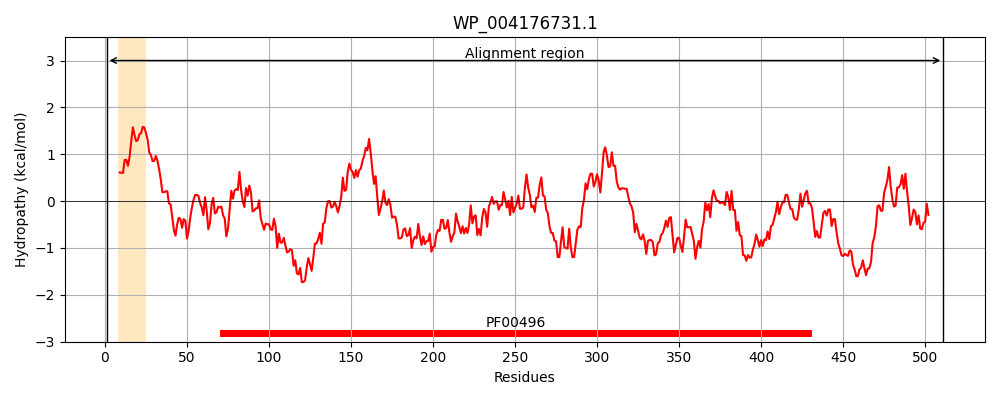
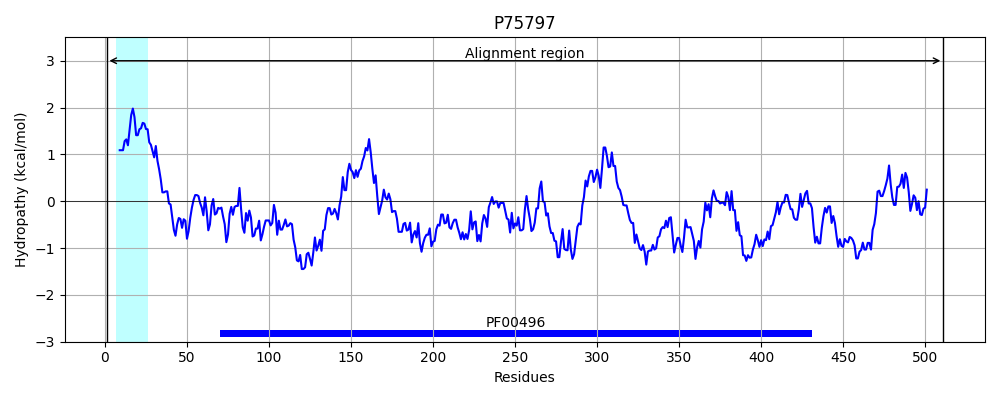
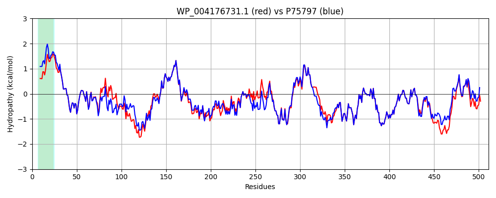

Hit Accession: P75797
Hit TCID: 3.A.1.5.11
Hit Description: gnl|BL_ORD_ID|11410 gnl|TC-DB|P75797|3.A.1.5.11 Putative binding protein yliB precursor - Escherichia coli.
Mach Len: 511
e:0.000000
Query TMS Count : 1
Hit TMS Count: 1
TMS-Overlap Score: 0.900000
Predicted Substrates:CHEBI:5437;glutathione
BLAST Alignment:
Score: 2369 , Bit scores: 917 bits, E-value: 0.0e+00, Alignment length: 511, Percentage identity: 88
Query: 1 MTQPVSRKWWLALSIAAALASAPAFAAKDVVVAVGSNFTTLDPYDANDTLSQAVAKSFYQGLFGLDKEMKLQNVLAESYTVSPDGLVYTIKLHSGVKFQDGTDFNAEAVKANLDRASNPDNHLKRYNLYKNIASTEAVDPTTVKITLKQPFSAFINILAHPATAMISPAALKKYGKDIGFHPVGTGPYKLDTWNQTDFVKVSKFDGYWQPGLPKLDSITWRPVVDNNTRAAMLQTGEAQFAFPIPYEQAPLLAKNSKLELVASPSIMQRYISMNVTQKPFDNPKVREAINYAINRQALVKVAFAGYATPATGVVPPSIAYAQTYTAWPYDPAKARQLLKEAGYPNGFSTTLWSSHNHSTAQKVLQFTQQQLAQVGIKAQVTAMDAGQRAAEVEGKGQKESGVRMFYTGWSASTGEADWALSPLFASQNWPPTLFNTAFYSNPQVDNALSEALKTTDPQEKTKLYKEAQDIIWKESPWVPLVVEKLVSAHSKNLTGFYIQPDTGFSFEQADL 511
M + V R +AL IA AL ++ AFAAKDVVVAVGSNFTTLDPYDANDTLSQAVAKSFYQGLFGLDKEMKL+NVLAESYTVS DG+ YT+KL G+KFQDGTDFNA AVKANLDRAS+P NHLKRYNLYKNIA TEA+DPTTVKITLKQPFSAFINILAHPATAMISPAAL+KYGK+IGF+PVGTGPY+LDTWNQTDFVKV KF GYWQPGLPKLDSITWRPV DNNTRAAMLQTGEAQFAFPIPYEQA LL KN +EL+ASPSIMQRYISMNVTQKPFDNPKVREA+NYAINR ALVKVAFAGYATPATGVVPPSIAYAQ+Y WPYDP KAR+LLKEAGYPNGFSTTLWSSHNHSTAQKVLQFTQQQLAQVGIKAQVTAMDAGQRAAEVEGKGQKESGVRMFYTGWSASTGEADWALSPLFASQNWPPTLFNTAFYSN QVD+ L++ALKT DP EKT+LYK AQDIIW+ESPW+PLVVEKLVSAHSKNLTGF+I PDTGFSFE ADL
Sbjct: 1 MARAVHRSGLVALGIATALMASCAFAAKDVVVAVGSNFTTLDPYDANDTLSQAVAKSFYQGLFGLDKEMKLKNVLAESYTVSDDGITYTVKLREGIKFQDGTDFNAAAVKANLDRASDPANHLKRYNLYKNIAKTEAIDPTTVKITLKQPFSAFINILAHPATAMISPAALEKYGKEIGFYPVGTGPYELDTWNQTDFVKVKKFAGYWQPGLPKLDSITWRPVADNNTRAAMLQTGEAQFAFPIPYEQATLLEKNKNIELMASPSIMQRYISMNVTQKPFDNPKVREALNYAINRPALVKVAFAGYATPATGVVPPSIAYAQSYKPWPYDPVKARELLKEAGYPNGFSTTLWSSHNHSTAQKVLQFTQQQLAQVGIKAQVTAMDAGQRAAEVEGKGQKESGVRMFYTGWSASTGEADWALSPLFASQNWPPTLFNTAFYSNKQVDDFLAQALKTNDPAEKTRLYKAAQDIIWQESPWIPLVVEKLVSAHSKNLTGFWIMPDTGFSFEDADL 511 | Protein Hydropathy Plots: |
|---|
|  |  |
Pairwise Alignment-Hydropathy Plot:
|
|---|
|  |